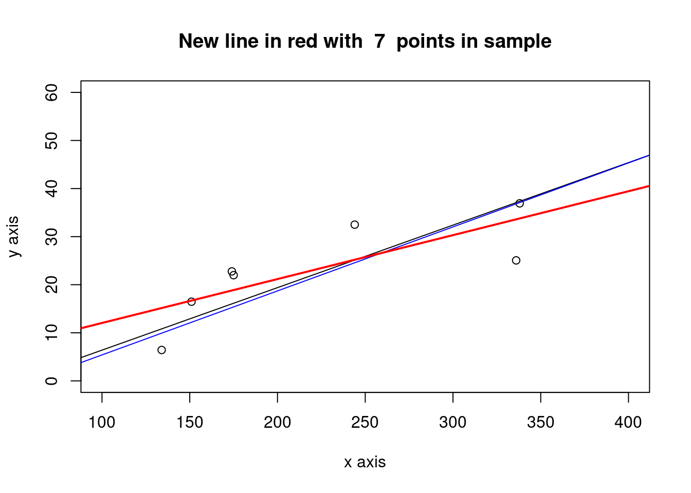

Chapter 12 Measures of Evaluation in Software Engineering
There are several measures typically used in software engieering. In particular for effort estimation, the following metrics are extensively used in addition or instead of statistical measures.
Mean of the Absolute Error (MAR): compute the absolute errors and take the mean
Geometric Mean of the Absolute Error (gMAR): more appropriate when the distribution is skewed
Mean Magnitude of the Relative Error (MMRE): this measure has been critisized many times as a biased measure (\(\frac{\sum_{i=1}^{n}{|{\hat{y}_i-y_i}|}/y_i}{n}\))
Median Magnitude of the Relative Error (MdMRE): using the median insted of the mean
Level of Prediction (\(Pred(l)\)) defined as the percentage of estimates that are within the percentage level \(l\) of the actual values. The level of prediction is typically set at 25% below and above the actual value and an estimation method is considered good if it gives a result of more than 75%.
Standardised Accuracy (SA) (proposed by Shepperd&MacDonnell): this measure overcomes all the problems of the MMRE. It is defined as the MAR relative to random guessing (\(SA=1-{\frac{MAR}{\overline{MAR}_{P_0}}\times100}\))
- Random guessing: \(\overline{MAR}_{P_0}\) is defined as: predict a \(\hat{y}_t\) for the target case t by randomly sampling (with equal probability) over all the remaining n-1 cases and take \(\hat{y}_t=y_r\) where \(r\) is drawn randomly from \(1\) to \(n\) and \(r\neq t\).
Exact \(\overline{MAR}_{P_0}\): it is an improvement over \(\overline{MAR}_{P_0}\). For small datasets the “random guessing” can be computed exactly by iterating over all data points.
12.1 Evaluation of the model in the Testing data
library(foreign)
gm_mean = function(x, na.rm=TRUE){
exp(sum(log(x[x > 0]), na.rm=na.rm) / length(x))}
chinaTrain <- read.arff("./datasets/effortEstimation/china3AttSelectedAFPTrain.arff")
logchina_size <- log(chinaTrain$AFP)
logchina_effort <- log(chinaTrain$Effort)
linmodel_logchina_train <- lm(logchina_effort ~ logchina_size)
chinaTest <- read.arff("./datasets/effortEstimation/china3AttSelectedAFPTest.arff")
b0 <- linmodel_logchina_train$coefficients[1]
b1 <- linmodel_logchina_train$coefficients[2]
china_size_test <- chinaTest$AFP
actualEffort <- chinaTest$Effort
predEffort <- exp(b0+b1*log(china_size_test))
err <- actualEffort - predEffort #error or residual
ae <- abs(err)
hist(ae, main="Absolute Error in the China Test data")
mar <- mean(ae)
mre <- ae/actualEffort
mmre <- mean(mre)
mdmre <- median(mre)
gmar <- gm_mean(ae)
mar## [1] 1867mmre## [1] 1.15mdmre## [1] 0.551gmar## [1] 833level_pred <- 0.25 #below and above (both)
lowpred <- actualEffort*(1-level_pred)
uppred <- actualEffort*(1+level_pred)
pred <- predEffort <= uppred & predEffort >= lowpred #pred is a vector with logical values
Lpred <- sum(pred)/length(pred)
Lpred## [1] 0.18612.2 Building a Linear Model on the Telecom1 dataset
- Although there are few datapoints we split the file into Train (2/3) and Test (1/3)
telecom1 <- read.table("./datasets/effortEstimation/Telecom1.csv", sep=",",header=TRUE, stringsAsFactors=FALSE, dec = ".") #read data
samplesize <- floor(0.66*nrow(telecom1))
set.seed(012) # to make the partition reproducible
train_idx <- sample(seq_len(nrow(telecom1)), size = samplesize)
telecom1_train <- telecom1[train_idx, ]
telecom1_test <- telecom1[-train_idx, ]
par(mfrow=c(1,1))
# transformation of variables to log-log
xtrain <- log(telecom1_train$size)
ytrain <- log(telecom1_train$effort)
lmtelecom1 <- lm( ytrain ~ xtrain)
plot(xtrain, ytrain)
abline(lmtelecom1, lwd=2, col="blue")
b0_tel1 <- lmtelecom1$coefficients[1]
b1_tel1 <- lmtelecom1$coefficients[2]
# calculate residuals and predicted values
res <- signif(residuals(lmtelecom1), 5)
xtest <- telecom1_test$size
ytest <- telecom1_test$effort
pre_tel1 <- exp(b0+b1*log(xtest))
# plot distances between points and the regression line
plot(xtest, ytest)
curve(exp(b0_tel1+b1_tel1*log(x)), from=0, to=300, add=TRUE, col="blue", lwd=2)
segments(xtest, ytest, xtest, pre_tel1, col="red")
12.3 Building a Linear Model on the Telecom1 dataset with all observations
- Just to visualize results
par(mfrow=c(1,1))
effort_telecom1 <- telecom1$effort
size_telecom1 <- telecom1$size
lmtelecom <- lm(effort_telecom1 ~ size_telecom1)
plot(size_telecom1, effort_telecom1)
abline(lmtelecom, lwd=3, col="blue")
# calculate residuals and predicted values
res <- signif(residuals(lmtelecom), 5)
predicted <- predict(lmtelecom)
# plot distances between points and the regression line
segments(size_telecom1, effort_telecom1, size_telecom1, predicted, col="red")
level_pred <- 0.25 #below and above (both)
lowpred <- effort_telecom1*(1-level_pred)
uppred <- effort_telecom1*(1+level_pred)
predict_inrange <- predicted <= uppred & predicted >= lowpred #pred is a vector with logical values
Lpred <- sum(predict_inrange)/length(predict_inrange)
Lpred## [1] 0.444#Visually plot lpred
segments(size_telecom1, lowpred, size_telecom1, uppred, col="red", lwd=3)
err_telecom1 <- abs(effort_telecom1 - predicted)
mar_tel1 <- mean(err_telecom1)
mar_tel1## [1] 12512.4 Standardised Accuracy. MARP0. ChinaTest
- Computing \(MARP_0\) in the China Test data
estimEffChinaTest <- predEffort # This will be overwritten, no problem
numruns <- 9999
randguessruns <- rep(0, numruns)
for (i in 1:numruns) {
for (j in 1:length(estimEffChinaTest)) {
estimEffChinaTest[j] <- sample(actualEffort[-j],1)}#replacement with random guessingt
randguessruns[i] <- mean(abs(estimEffChinaTest-actualEffort))
}
marp0Chinatest <- mean(randguessruns)
marp0Chinatest## [1] 3956hist(randguessruns, main="MARP0 distribution of the China dataset")
saChina = (1- mar/marp0Chinatest)*100
saChina## [1] 52.812.5 Standardised Accuracy. MARP0. Telecom1
- Computing \(MARP_0\)
telecom1 <- read.table("./datasets/effortEstimation/Telecom1.csv", sep=",",header=TRUE, stringsAsFactors=FALSE, dec = ".") #read data
#par(mfrow=c(1,2))
#size <- telecom1[1]$size not needed now
actualEffTelecom1 <- telecom1[2]$effort
estimEffTelecom1 <- telecom1[3]$EstTotal # this will be overwritten
numruns <- 9999
randguessruns <- rep(0, numruns)
for (i in 1:numruns) {
for (j in 1:length(estimEffTelecom1)) {
estimEffTelecom1[j] <- sample(actualEffTelecom1[-j],1)}#replacement with random guessingt
randguessruns[i] <- mean(abs(estimEffTelecom1-actualEffTelecom1))
}
marp0telecom1 <- mean(randguessruns)
marp0telecom1## [1] 271hist(randguessruns, main="MARP0 distribution of the Telecom1 dataset")
saTelecom1 <- (1- mar_tel1/marp0telecom1)*100
saTelecom1## [1] 5412.5.1 MARP0 in the Atkinson dataset
- For checking results you may use figure Atkinson in Shepperd&MacDonnell
## [1] 281